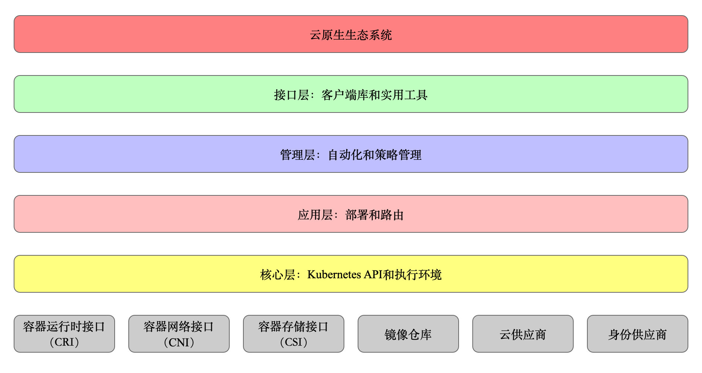
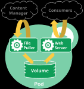

云原生的定义
- 能够提高云上资源利用率和应用交付效率的行为或方式都是云原生的。
云计算
- 云计算就是一种配置资源的方式，根据资源配置方式的不同，我们可以把云计算分成
- IAAS
- 这是为了想要建立自己的商业模式并进行自定义的客户，例如亚马逊的 EC2、S3 存储、Rackspace 虚拟机等都是 IaaS。
- PAAS
- 工具和服务的集合，对于想用它来构建自己的应用程序或者想快速得将应用程序部署到生产环境而不必关心底层硬件的用户和开发者来说是特别有用的，比如 Cloud Foundry、Google App Engine、Heroku 等。
- SAAS
- 终端用户可以直接使用的应用程序。这个就太多，我们生活中用到的很多软件都是 SaaS 服务，只要基于互联网来提供的服务基本都是 SaaS 服务，有的服务是免费的，比如 Google Docs，还有更多的是根据我们购买的 Plan 和使用量付费，比如 GitHub、各种云存储。
- IAAS
微服务
- 微服务是一种分布式架构设计理念，为了推动细粒度服务的使用，这些服务要能协同工作，每个服务都有自己的生命周期。
- 一个微服务就是一个 独立的实体， 可以独立的部署在PaaS平台上，也可以作为一个独立的进程在主机中运行。
- 服务之间通过 API 访问，修改一个服务不会影响其它服务。
云原生思维导图

云原生应用应具有以下特性
- 敏捷
- 可靠
- 高弹性
- 易扩展
- 故障隔离保护
不中断业务持续更新
Kubernetes
Kubernetes是 google基于borg开源的容器编排调度引擎，作为CNCF 最重要的组件之一
- 编排系统
- 规范
- 描述集群的架构，定义服务的最终状态，Kubernetes可以将系统自动的达到和维持最终状态。
K8S用户可以通过编写一个YAML或者json 格式的配置文件，也可以通过工具/代码生成 或直接请求kubernetes api 创建应用，该配置文件中包含了用户想要应用程序保持的状态，不论整个 Kubernetes 集群中的个别主机发生什么问题，都不会影响应用程序的状态，你还可以通过改变该配置文件或请求 Kubernetes API 来改变应用程序的状态。
k8s 设计理念与分布式系统
- 分层架构

镜像到k8s完整流程
- 首先打包我们的应用成 镜像
- 通过yaml/json 格式的文件 作为资源清单来 描述应用
- 可以用kuberctl 工具运行 资源文件
- kubectl 是直接操作 APIServer 的，所以就相当于把我们的清单提交给了 APIServer
- 集群获取到清单描述的应用信息后存入到etcd数据库中
- kube-scheduler 组件发现这个时候有一个 Pod 还没有绑定到节点上，就会对这个 Pod 进行一系列的调度，把它调度到一个最合适的节点上，把这个节点和 Pod 绑定到一起（写回到 etcd）
- 节点上的 kubelet 组件这个时候 watch 到有一个 Pod 被分配过来了，就去把这个 Pod 的信息拉取下来，然后根据描述通过容器运行时把容器创建出来，最后当然同样把 Pod 状态再写回到 etcd 中去，这样就完成了一整个的创建流程。
K8s 对象
- K8s对象指的是 K8s系统的持久化实体，所有这些对象合起来，代表了你集群的实际情况。
- Kubernetes将其数据以Kubernetes对象的形式通过 api server存储在 etcd 中
- Kubernetes对象）描述了：
- 集群中运行了哪些容器化应用程序（以及在哪个节点上运行）
- 集群中对应用程序可用的资源
- 应用程序相关的策略定义，例如，重启策略、升级策略、容错策略
- 其他Kubernetes管理应用程序时所需要的信息
- 一个Kubernetes对象代表着用户的一个意图（a record of intent），一旦您创建了一个Kubernetes对象，Kubernetes将持续工作，以尽量实现此用户的意图。
对象的spec和status
- 每一个K8s对象都包含了两个重要的字段：
- spec，用户提供，描述了对该对象所期望的目标状态
- status 只能由 Kubernetes 系统来修改，描述了该对象在 Kubernetes 系统中的 实际状态
- 理解：k8s对象表示通过spec 创建的一个个实体，由kind 字段分类
Pod
- Pod 是kubernetes 中 可以 创建和部署的 最小和最简的单位。
- Pod 代表着集群中运行的进程。
- Pod中封装着应用的容器(也可能是好几个容器)，存储，独立的网络IP（每个容器都有ip+port），管理容器如何运行的策略选项。
- Pod代表着部署的一个单位: K8s中应用的一个实例，可能由一个或者多个容器组合在一个共享资源。
- Docker是kubernetes中最常用的容器运行时，但是Pod也支持其他容器运行时。
Pod 的使用方式
- 一个pod 中 运行一个容器。
- “每个Pod中一个容器”的模式时最常见的用法，在这种方式中，可以把Pod看成单个容器的封装，k8s管理的是Pod，而不是之间管理容器。
- 在一个Pod中同时运行多个容器。
- 一个 Pod 中也可以同时封装几个需要紧密耦合互相协作的容器，它们之间共享资源。这些在同一个 Pod 中的容器可以互相协作成为一个 service 单位 —— 一个容器共享文件，另一个 “sidecar” 容器来更新这些文件。Pod 将这些容器的存储资源作为一个实体来管理。
- 每一个 Pod 容器组都是用来运行某一特定应用程序的一个实例。
Pod 如何管理多个容器
Pod 的设计目的是用来支持多个互相协同的容器，是的他们形成一个有意义的服务单元。一个 Pod 中的多个容器很自然就可以随 Pod 被一起调度到集群中的同一个物理机或虚拟机上。Pod 中的容器可以：
- 共享资源、依赖
- 互相通信
- 相互协商何时以何种方式结束运行

Pod 为其成员容器提供了两种类型的共享资源：网络和存储
- 网络
- 每一个 Pod 被分配一个独立的 IP 地址。Pod 中的所有容器共享一个网络名称空间：
- 同一个Pod中的所有容器IP地址都相同
- 同一个Pod中的不同容器不能使用相同的端口，否则会导致端口冲突
- 同一个Pod中的不同容器可以通过localhost:port进行通信
- 同一个Pod中的不同容器可以通过使用常规的进程通信手段，例如 SystemV semaphores 或者 POSIX 共享内存
- 每一个 Pod 被分配一个独立的 IP 地址。Pod 中的所有容器共享一个网络名称空间：
- 网络
不同 Pod 上的两个容器如果要通信，必须使用对方 Pod 的 IP 地址 + 对方容器的端口号 进行网络通信
- 存储
- Pod 中可以定义一组共享的数据卷。Pod 中所有的容器都可以访问这些共享数据卷，以便共享数据。Pod 中数据卷的数据也可以存储持久化的数据，使得容器在重启后仍然可以访问到之前存入到数据卷中的数据
利用minikube 单机部署k8s
介绍minikube
- minikube 支持多种不同的驱动来运行 Kubernetes 集群。根据资源环境选择合适的驱动：
- HyperKit 驱动： HyperKit 是 macOS 平台上的开源的虚拟化技术，为轻量级虚拟机和容器部署进行了优化。
- Hyper-V 驱动： Hyper-V 是内置在现代版本 Microsoft Windows 中的虚拟化程序。
- KVM 驱动: KVM 基于内核的虚拟机 是一个基于 x86 硬件的 Linux 的全虚拟化解决方案，包含虚拟化扩展。
- Docker 驱动: Docker 驱动允许你将 Kubernetes 安装到现有的 Docker 服务中。在 Linux 系统中，这不需要启用虚拟化。
- none 驱动: 即 Minikube 不使用任何类型的驱动，直接使用当前操作系统来运行 Kubernetes 集群，也称为裸金属（bare-metal）。
- podman 驱动: 是一种可以代替 Docker 容器运行时的另外一种驱动。
- ssh 驱动: 程序允许高级 minikube 用户跳过虚拟机创建，允许 minikube 在用户提供的虚拟机上运行。
- Parallels 驱动: 对于拥有 Parallels Desktop for Mac 的用户特别有用，因为它不需要 VT-x 硬件支持。
- VirtualBox 驱动: 是 minikube 的早期支持驱动。它可能不能提供最快的启动时间，但它是 Microsoft Windows Home 用户可用的最稳定的驱动程序。
- vmware 驱动: 支持所有基于 vmware 的虚拟化环境。
- 驱动选择可以分为一下几类：
- 无驱动：none
- 容器驱动：docker、podman
- 远程主机驱动： ssh
- 虚拟化虚拟机驱动 MacOS 平台：HyperKit、Parallels、VirtualBox、Vmware
- 虚拟化虚拟机驱动 Windows 平台：Hyper-V、VirtualBox、Vmware
- 虚拟化虚拟机驱动 Linux 平台：KVM、VirtualBox、Vmware
注：
由于minikube复用了docker-machine，在其软件包中已经支持了相应的VirtualBox, VMware Fusion驱动
VT-x/AMD-v 虚拟化必须在 BIOS 中开启
在Windows环境下，如果开启了Hyper-V，不支持VirtualBox方式
转载请注明来源，欢迎对文章中的引用来源进行考证，欢迎指出任何有错误或不够清晰的表达。可以在下面评论区评论，也可以邮件至 1065016533@qq.com